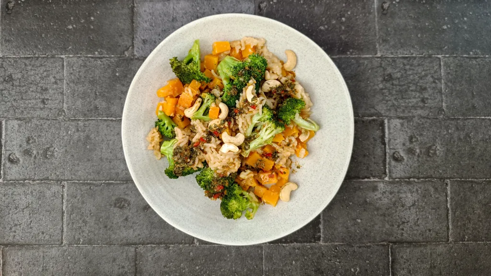
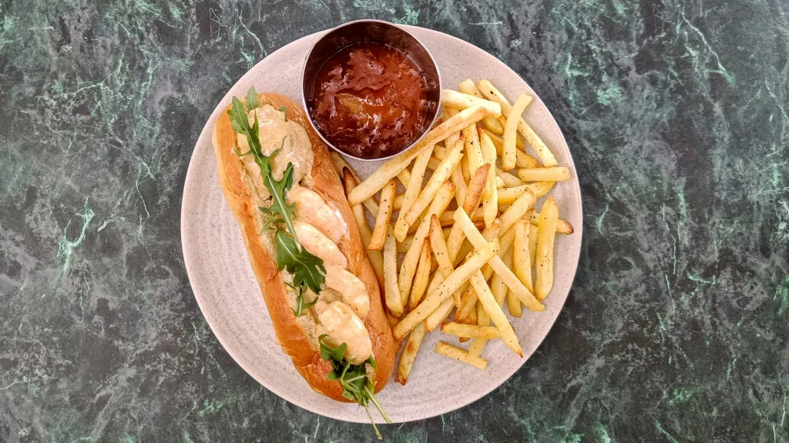

Most recent recipes
Gently spiced pearl barley with tomatoes, leeks, dill & pine nuts
1 hr 15 mins
Serves 4
Orecchiette con cime di rapa e salsiccia
40 mins
Serves 4
Sausage lasagna
1 hr 55 mins
Serves 10

Honey and mustard pork
40 mins
Serves 4
Thai-style salmon parcels with greens & rice
25 mins
Serves 2
Arabic samosas
1 hr 10 mins
Serves 12
Hunter’s chicken pie
1 hr 20 mins
Serves 4
All-in-one sticky rice with broccoli, squash, chilli & ginger
1 hr 10 mins
Serves 2

Coronation prawn buns
15 mins
Serves 4

Fusilli all’ortolana
45 mins
Serves 4